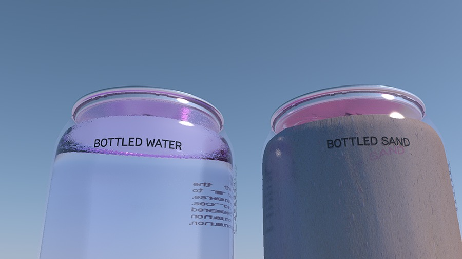
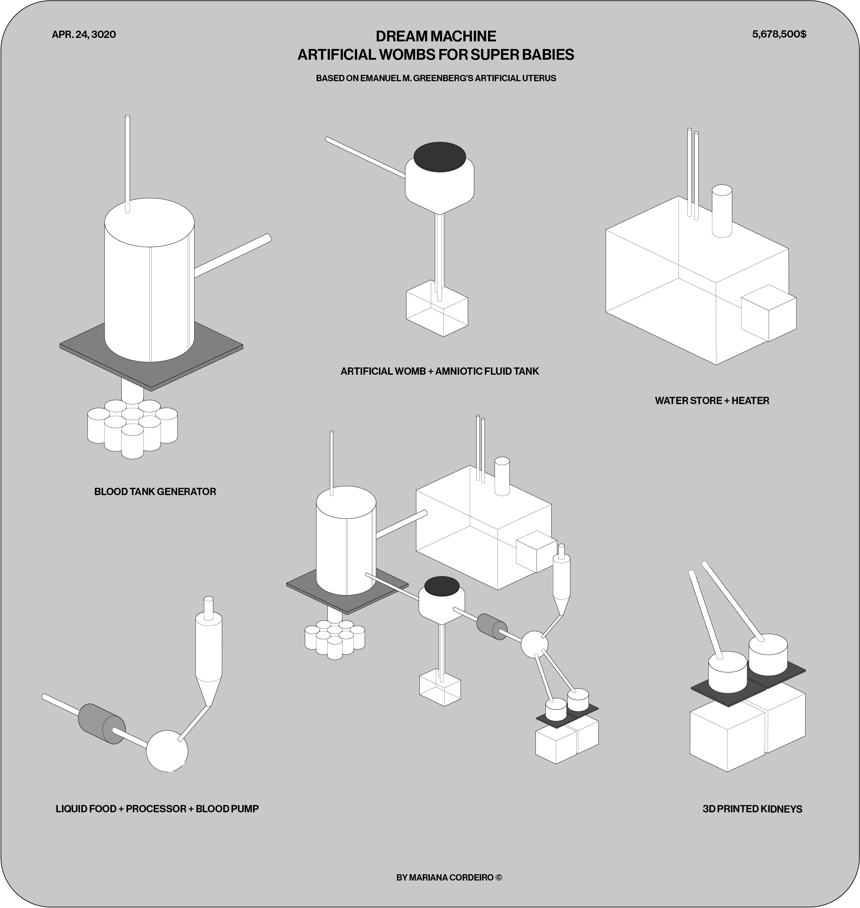

Since we, the collective, are currently playing in a sandbox, I might as well talk about sand.
Simulation is no longer that of a territory, a referential being or a substance. It is the generation by models of a real without origin or reality: a hyperreal. The territory no longer precedes the map, nor survives it. Henceforth, it is the map that precedes the territory—precession of simulacra—it is the map that engenders the territory and if we were to revive the fable today, it would be the territory whose shreds are slowly rotting across the map. It is the real, and not the map, whose vestiges subsist here and there, in the deserts which are no longer those of the Empire, but our own. The desert of the real itself. (…)[1]
As we dig deeper into the possibility of a catastrophic post-pandemic scenario, it is important to question if we are still in the domain of ‘the desert of the real'. I’d say so. I’d say we are even deeper into the desert, without even having an outlook on how we can escape it. But for those who might be wondering what is this desert we’re delving deeper into, I’ll begin to explain.
This desert, arid and chaotic, is the space where there’s no introspection—the mirroring of being and appearances, of the real and its concepts becomes elusive. Understanding is compromised and we cannot foresee what may come from it, even if we think it’s within our capacity. For those who, like us, are reduced to the very simulacra that is this pandemic experience: welcome ‘back’ to the hyperreal.
We are currently living in a world where the self is broken—due to our current age of alienation, where individuals are disconnected and fragmented—, and ‘everyday familiarity’ has collapsed. Our reality today looks like a desert, as we don’t irrigate it with our real perception and knowledge. Instead, we are engrossed in a hyperreality, manufactured for (and by) us to fabricate a mental image of what this current situation looks like. We have always been, and still are, surrounded by this image—a direct product of how much pop culture, games, literature and art (produced since the influenza pandemic) we have consumed. I am not saying that things aren’t as true as they are and that we are living in some sort of fake reality; rather what I am saying is that once you are exposed to the idea of a thing, it takes the place of the thing itself in your mind. We rapidly lost track that there ever was a flat terrain—a space where it was possible to grasp and navigate through reality, where we could easily see. We began to live in an ‘imaginary reality’ full of dunes and rock sediments that cloud our sight—the horizon is not so clear anymore—, as if we aren’t living in it for quite some time. Maybe I’ll address this some other time, but not right now.
Thus we turn to borrowing the image of the pandemic through its representations in culture and what we consume. And there’s this uncanny feeling of happiness and thrill when borrowing the idea of the pandemic and its reality—individuals become nihilistic about their current realities. Everyday, when we read the news, we might feel overwhelmed, but we end up not being able to process information, due to the inundation of tragic accounts broadcasted from the pandemic. But the reality of it is very different from experiencing it ‘IRL’. Reality still exists, even if we are incapable of grasping it through these desert sandstorms. Although it is very difficult to see beyond the simulacra given its fast unfolding and over-sensationalism, there could be a way out of it. Maybe we just need to push away the dust in front of our eyes and ask if we are ready to let go the seductive landscapes and oasis that the desert offers us. We really need to talk about these things, and become fully aware of its consequences.
REFERENCES
[1] Baudrillard, Jean. (2005) Simulacra and Simulation. Ann Arbor, United States: The University of Michigan Press. (pp.166-184)
The narrative proposal of this fiction, or rather envisioned reality, is very straightforward. In ten years from now, sand will be sold in a similar fashion as water. Beaches have stopped being populated, and people who want to interact with its sand, should now search for it through other, more convenient, methods. Borrowing from the idea of bottled water, the 20th century invention that changed the world, bottled sand provides the consumer with many benefits, only possible now—whether it is for leisure, or for the need to shape its infinite forms—, this sand presents itself as the optimal way to search for the meaning to whatever the user may be looking for. It is not clear whether this scenario is framed in a near future, or if it can in fact be considered canon, but its take on speculation through branding attempts to digest its own stupidity.
The steady rise of globalisation over the past decades has, in a generic sense, successfully broken down barriers that once kept nations and organisms apart. According to American biologist Peter Del Tredici, «the spread of the virus is nature’s way of exploiting the opportunity presented by globalisation and urbanisation of our planet». Covid-19, along with other viruses, have historically migrated from a wild animal into society, but globalisation has paved the way for the unprecedented spread of diseases at an unimaginable rate. Highly mobile bodies are now immobilised due to the very phenomenon that once opened the doors for them.
The Perfect Storm—commonly defined as a particularly violent storm arising from a rare combination of adverse meteorological factors—is a cautionary tale that revolves around the conception of a bio-political device of personal technical identification to bring security in a future of intermittent pandemics and geopolitical chaos.
Departing from the work of of Mahmoud Keshavarz—a Post-Doctoral Researcher at the Engaging Vulnerability Research Program at the Department of Cultural Anthropology and Ethnology at Uppsala University, Sweden—, author of The Design Politics of the Passport: Materiality, Immobility, and Dissent (2018), this small fiction aims to raise questions on the politics of design and the design of politics, as well as the implications of a such a device for data privacy, mobility and democracy.
As argued by Keshavarz, when the right to move is summarised and materialised through the designing of a device, the lack of such material presence would result in the lack of exactly that right, which has been manufactured through the device: the right to move freely. Depriving one from one’s identity or rendering one’s identity worth ‘nothing’, make their body immobile, or worse, illegal, around specific borders. However, one should remember: «the history of domination over mobility is also a history of the struggle to overthrow it».
REFERENCES
Burt, Chris. ‘ID2020 and partners launch program to provide digital ID with vaccines’, Biometric Update. September 20, 2019.
Keshavarz, Mahmoud. The Design Politics of the Passport: Materiality, Immobility, and Dissent. London – Bloomsbury Visual Arts. 2018.
Sommariva, Elena. ‘Nature and quarantine: how animals conquer cities during the Coronavirus’. Domus. March 27, 2020.
We are all architects of the future. We all dream big.
“Dreams are powerful. They are repositories of our desire. They animate the entertainment industry and drive consumption. They can blind people to reality and provide cover for political horror. But they can also inspire us to imagine that things could be radically different than they are today, and then believe we can progress toward that imaginary world.”[1]
Dreams are artifacts of the future. They are constructive-criticism tools, action catalysts, fictional prototypes and unreal maps. In Stephen Duncombe’s words: they inspire us to imagine the world from a different perspective and believe that we can conquer that vision. Therefore, to dream is to forecast realities, to create fictions, to design social imaginaries. We all have dreamt at some point in our lives: we start as children when questioned what we want to be when we grow up. As time passes the ambition to land on the moon, perform on a stage or even draw houses changes to wanting to save lives, advocating for human rights or even solve problems. The lifetime span allows us to become more critical of our plans and rethink them, allowing us to “dream again”.
In Speculative Everything: Design, Fiction, and Social Dreaming (2013), designers Anthony Dunne and Fiona Raby reveal that we need alternatives: “We need to dream new dreams for the twenty-first century as those of the twentieth century rapidly fade. But what role can design play?”[2]. The design paradigm is essentially understood as problem solving activity, similar to work out a riddle or clear up a dilemma. The intrinsic instinct designers have, to break through the irreparable challenges we sometimes encounter, leaves no alternatives other than to readjust our practice. Nonetheless, speculation is a possibility in the design field: a tool for endless approaches to a diverse universe of unrealities, to put what-if’s into perspective, to imagine, to dream and debate them. “Design speculations can act as a catalyst for collectively redefining our relationship to reality.”[2]
[FICTIONAL WORLDS]
“Our actual world is surrounded by an infinity of other possible worlds.”[3], Lubomír Doležel writes in Heterocosmica: Fiction and Possible Worlds (1998). There are no perfect fictional worlds. As we speculate about the future, there are two paths: we either think about it as very positive, a fortunate dream, or as very negative, a catastrophic nightmare. We can imagine a house with the most advanced technology of doors activated by face recognition and reactive sensory objects, flying cars, DNA-inspired clothing, food pills, smart drugs, womb generators, etc. The revolution of revolutions. Even though transformation of concepts such as marketplaces, households and workforces are needed, they should not be the starting point. Instead, Dunne and Raby suggest us to look out for the more complex: “Rather than thinking about architecture, products, and the environment, we start with laws, ethics, political systems, social beliefs, values, fears, and hopes, and how these can be translated into material expressions, embodied in material culture, becoming little bits of another world that function as synecdoches.”[2]
There are many research fields working within the speculation spectrum: fictional worlds are approached by political science as a model of reality, by philosophy as a debate around fictionalism, by literary theory as a semantics of the duality between real and irreal, even by science as a realm of multiverses. All of these practices operate through fiction as a tool for development and expansion of knowledge. Perhaps literature and the arts stand out the most as sources of inspiration. They acknowledge logic mechanisms and more pragmatic viewpoints, often used in scientific fields and exceed them to build the future. Fictional worlds may seem impractical, however scientific possibility is the limit and anything else (economics, environments, behavior) can be tested till it ruptures. “Fictional worlds are not just figments of a person’s imagination; they circulate and exist independently of us and can be called up, accessed, and explored when needed.”[2]

[DESIGNER BABIES]
Science fiction became our reality and we don't even think about it. We're at a similar point today with genetic engineering. Dylan Kim, a student at Eaglebrook School, asks an odd—nonetheless important—question about the future in his TED talk Genetically Engineered Super Babies: The Future of Mankind?: “Would you give your kids superpowers?”[4] He imagines a hypothetical reality, presenting us to our daughter Emma, a genetically modified human being. She’s any parent's dream: hyper intelligent, with superhuman senses, perfect vision, no inherent genetic diseases and immunity to deadly ones. On the other hand, her best-friend Olivia, non genetically modified, is often sick and failing school. He transports us back to the present: CRISPR-Cas9 (Clustered Regularly Interspaced Short Palindromic Repeats), a new emerging technology that allows scientists to change the human genome, a genetic pair of scissors that cuts unwanted DNA, triggering cells to replace it in a particular way. “Do we really want to use this genetic pair of scissors?”[4], Dylan asks.
In 2015, scientists led by Kamel Khalili, director of the Comprehensive NeuroAIDS Center at Temple University conferred genetic resistance to HIV in infected mice and rats. The first clinical trial for a CRISPR cancer treatment on human patients was approved in early 2016 in the U.S. and, a month later, August 2016, Chinese scientists announced they would treat lung cancer patients with immune cells modified by CRISPR. Despite genetic engineering being a remarkable step to medicine evolution, a tool for healthcare problem-solving and also an economical tool for cost reduction in the growth of a child, we must observe it from an ethical point of view. Humans have always been evolving and changing throughout their whole existence. We live in a multicultural dynamic world, where diversity embraces individual uniqueness. If our future-selves can all be modified and have superpowers, if we can all create perfectly designed babies for a better world, the story of humanity is compromised and notions of tradition, uniqueness, nature, diversity and truth fade away.
Lulu and Nana, born in 2018, are the first super babies twins, daughters of a HIV-positive father and HIV-negative mother. They are a scientific human research, a product of He Jiankui’s modification of embryos CCR5 gene in an attempt to confer genetic resistance to HIV, they are a risk of unwanted mutations. They are a consequence of an unethical dream and a fictional reality. In order to dream/speculate, to project a fictional world and imagination design, we must take a critical stance. We must look at the present to design the future. As Anthony Dunne and Fiona Raby said: “(…) we start with laws, ethics, political systems, social beliefs, values, fears, and hopes, and how these can be translated into material expressions, embodied in material culture, becoming little bits of another world that function as synecdoches.”[2]
REFERENCES
[1] Stephen Duncombe, Dream: Re-imaging Progressive Politics in an Age of Fantasy (New York: The New Press, 2007), 182.
[2] Dunne, Anthony and Fiona Raby. Speculative Everything. Design Fiction and Social Dreaming. Cambridge: The MIT Press, 2013.
[3] Lubomír Doležel, Heterocosmica: Fiction and Possible Worlds (Baltimore: John Hopkins University Press, 1998).
[4] TEDx Talks. (2019, September 4th). Genetically Engineered Super Babies: The Future of Mankind? | Dylan Kim | TEDxEaglebrookSchool [Video]. YouTube. Accessed at https://www.youtube.com/watch?v=gjGLWTtzYCE.
The practice of envisioning the future has always been tied to an intrinsically human curiosity. Futurology can take many forms, and speculation as a tool for constructing a preferable reality can draw influence from its more ancient forms. Foresight has been a desirable ability for centuries, and although these new disciplines and schools of thinking and anticipating the future are very much necessary and urgent, disregarded methods such as divination and cartomancy may have paved the way for a generalized interest in shaping the future and rejecting the unknown.
The roots in which these esoteric practices are grounded are very stable ones, created with minucius methodology and rules. And though its forecasts are vague and generalized, suffering from a general lack of credibility, its mechanics are a solid approach to constructing a speculation.
Cartomancy, specifically the practice of Tarot, is first and foremost a storytelling tool. Its divination comes from the ability to produce a narrative through symbology. What speculation as a practice can borrow from tarot is an innate method of world and fiction building based on a determined set of parameters. Telling a story through archetypes, codes of relationships and revealing aesthetics. It is a strict yet expansive approach, it's heavily grounded and still allows for endless combinations.
So I propose a speculative exercise based on cartomancy. Not in such a grounded and modular fashion, but in a way that borrows its storytelling aesthetic and the conception of archetypes and their narratives, giving it traits and context.
The post-pandemic future is uncertain, but structures will be changed—in some ways, permanently. There is an urgency to breakout from the pandemic mentality and discover the cards we’ve been dealt.
THE VIGILANT
frenetic; neurose; fear;
The Vigilant is ruled by the fearfulness that persists in the aftermath. Its paranoid nature stems from not being able to process how social structures have been affected, so it embodies the frenetic constant of experiencing an unnatural or uncanny reality and not being able to surpass it. This archetype is a result of the unbearable load of misinformation that the world has been subjected when in crisis. The post-pandemic reality is an uneasy one, where doubt is inescapable. The Vigilant represents a suffering caused by the uncertainty and the controversy of the practices of those in charge and how they exercise control over their people. It is an established lack of trust towards anything, an uneasiness and fear directed at people, institutions and governments, a sense of persecution and lack of control.
THE ROGUE
mistrust; furtiveness; leadership;
The Rogue is a stray archetype. It is built on the notion of a failed governance. As the sense of protectiveness, responsibility and sovereignty embedded in the State and its innate powers crumbles under a crisis, its true lack of structure and ability to rule is revealed—and its abilities as a credible system diminishes overtime and enforces a lack of general faith that cannot be restored.
The Rogue symbolizes mistrust in established and unified sources of political power and ruling—it manifests itself with a destructive and revolutionary character that seeks a turning of the tables in the notion of a System. This archetype embodies a need to rebel against the illusory omnipresence of the State and its failures, fostering receptivity to new political ideals as the system weakens.
The AWOL
elsewhere; sustainability; solitude;
The AWOL embodies migration—the rapid and constant shift in social structures amidst a crisis solidifies the concept of decentralization in a post pandemic world. The urgent need to flee from the crowd results in an irreversible disjointment of the concepts of center, city and capital. This archetype’s character is grounded in the possibility of self-sustainability, an off the grid setting and way of life. As the city and its corporations have collapsed, the post-pandemic reality can offer an alternative elsewhere, but the center. The AWOL symbolises the shift to an adaptable way of being that can create its own resources and exit the constraints of the free market that dictates the cosmopolitan way of living.
THE HOARDER
greed; quantity; reaction;
The Hoarder is a low-level power. Not one derived from the state but from a corporate mentality. This archetype represents being above the common and having enough resources to not only endure the aftermath of a global crisis, but also to profit from it. The Hoarder never gets affected and always comes out on top, preying on those who suffer from the inverse situation. Its character is based on exploitation of broken social structures and the despair of the common man. If one loses everything it is because The Hoarder takes it away.
THE TECHNOCRAT
savviness; resource; giving;
The technocrat is the inversion of the notion of itself. The new technocrat is not one who constructs governments, but instead it strays away from industries to bring a sense of technological democracy to the people. It’s an archetype based on a post-technocentric world that exploits the fault that the government has shown amidst a pandemic. Instead of connecting people when they couldn’t be connected physically, technology tore a larger distance in the separation of classes. The technocrat symbolizes the development of a global network decentralized from corporate interests that can serve and develop the world as a whole. It is based on the values of togetherness, justice and overthrowing conventions.
THE SANDBOX
expansion; unknown; foreshadowing;
The sandbox does not represent a type of persona, but a state of being. It is a common ground for development that can stem from a general state of trauma. It represents the gift of being given the chance of a clean slate, that can only origin from structures that have been shaken to the point of fragility, to then be overthrown. This archetype is an embodiment of fertility and of the ability of shaping and molding. A playground for the world.